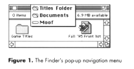

One of the things the Finder does best is maintain the illusion that an icon and its
window represent a single object. Using the routines described in this article, your
application can help maintain that illusion. You can ensure that when the user renames
an open document, the change is reflected in the document window's title. You can also
gracefully handle problems that may arise if the document file is moved. Other
improvements that make your application's interface more consistent with the
Finder's include preventing a second window from opening when an open document's
icon is double-clicked and adding a pop-up navigation menu to the document window's
title bar.
To rename a folder or file in the Finder, you click the icon name, type a new name, and
press Return. For folders, if the window is open, the change is reflected right away in
the window's title bar. But for files, if the document is open in your application, its
window may not reflect the name change. Try this little experiment: Create a document
in your application and save it. Switch to the Finder, find your document, and change
its name. What did your application do? If it's like most applications, nothing
happened: the document window has the same name as before. Go ahead and try to use
Save As to give the file the same name you gave it in the Finder. You probably get an
error message. Now try to save the document under the original name. Do you still get
an error message? Quit your application and read on for a way out of this frustration.
The only convenient way for a user to rename a document is with the Finder. (The Save
As command doesn't rename a document; it creates a copy of the document with a new
name.) As you've just seen, name changes made in the Finder aren't automatically
reflected in an open document window. Another change that's often not picked up by the
application is when the user moves the document to a different folder. The code in this
article helps synchronize your application's documents with their corresponding files,
so that a document will respond to changes made outside the application to its file's
name or location.
This article also describes how to prevent a duplicate window from being opened if the
user opens an already open document in the Finder and how to add a pop-up menu to the
document title bar to help the user determine where the file is stored. All the code for
implementing these features is provided on this issue's CD, along with a sample
application that illustrates its use.
The Electronic Guide to Macintosh Human Interface Design says that applications
should "match the window title to the filename." Specifically, when a user changes the
document name in the Finder, you should update all references to the title. The guide
also refers to the Macintosh Human Interface Guidelines,page 143, where it says, "The
document and its corresponding window name must match at all times."
When I first started looking at the problem of document synchronization, I assumed
that the animated example in the Electronic Guide to Macintosh Human Interface Design
was the way to go. In this animation, the application checks for a name change when it
receives a resume event. However, I became uncomfortable with this approach,
because it would cause a delay between the user's changing the name of the document in
the Finder and the application's updating the window title. Using a resume event relies
on a separate action by the user, namely, bringing the application to the foreground.
This seemed nonintuitive and didn't support the illusion that a window and its icon
represent a single object. Also, it's possible that with Apple events and AppleScript an
application could be launched, do some work, and quit without ever being frontmost --
that is, without ever receiving a resume event.
The truth is that these days, with multiple applications running at the same time, with
networked, shared disks everywhere, and with applications and scripts pulling the
puppet strings as often as users, a file's name or location may change at any time,
whether the application is in the foreground or the background. A script might move or
rename a file or, if the file is on a shared volume, another user on the network could
move or rename it or even put the file in the Trash -- all behind the application's
back. The only solution I found under the current system software was to regularly
look at the file to see if its name or location has changed. In other words, the
application has to poll for changes.
Polling is generally a bad idea, but there are cases when it's the only reasonable way to
accomplish a task, and this is one of them. However, I tried to keep the polling very
"lightweight" and low impact by using the following guidelines:
The sample code follows this advice, doing everything it can to be unobtrusive. It polls
for file changes only once every second while in the foreground. In the background, the
application's WaitNextEvent sleep time is set to ten seconds, so it only wakes up --
and thus polls -- every ten seconds if nothing else is going on. To detect changes to
files, I chose to examine the volume modification date of the volume containing the file,
since this information is always available in local RAM, even for a shared volume. If
that date changes, I look deeper to see if the change is one I'm interested in. As you dip
into the code, you'll see the details.I use the file reference number to track files
because it survives changes in the name and parent directory. However, this requires
that the files be kept open. If you can't keep your files open, you might want to look at
John Norstad's excellent NewsWatcher application, which uses alias records to
synchronize files. NewsWatcher is on this issue's CD; its official source can be found
at ftp://ftp.acns.nwu.edu/pub/newswatcher/.*
Friendly as it is, this polling solution is appropriate only for the current system
software; future system software versions (such as Copland, the next generation of the
Mac OS) will provide a much better way to detect changes. Your application will be
able to subscribe to notification of changes that it's interested in. In fact, polling the
current file system structures will be unfriendly behavior under Copland, which will
have demand-paged virtual memory and a completely new file system. For this reason,
the sample code is designed to work only under System 7. You'll be able to easily
retrofit the code to run under Copland once the details of the correct way to detect file
changes have been worked out.
THE HEART OF THE MATTER
Every Macintosh programmer eventually comes to grips with how to keep track of all
the information associated with a document. I use a structure called a document list and
I have a set of routines that support it. The document list reverses some common
assumptions used by developers. Developers often use the window list to track their
windows and attach their document data to it, but this limits Apple's ability to redefine
the window list. My recommendation is to create a document list (almost identical to
the window list) containing the document data and attach the windows to it. In this way,
the actual structure of the window list is not a concern. You'll find my implementation
of the document list and its supporting routines on this issue's CD.
While the code presented here is specific to my implementation, you can easily
generalize it as needed. The code below shows how your application might call
DSSyncWindowsWithFiles, a routine that keeps your documents synchronized with the
Finder by checking for and handling changes made outside the application to file names
or locations. Call the routine from within your main event loop when you receive an
event (including null events). Note that error checking has been removed from the
code shown in the article, but it does appear on the CD.
while (!done) {
gotEvent = WaitNextEvent(everyEvent, &theEvent, gSleepTime,
theCursorRegion);
if (gotEvent)
DoEvent(&theEvent);
DSSyncWindowsWithFiles(kDontForceSynchronization);
}
This minor change does most of the work for your application. The machinery that
makes it happen lies within DSSyncWindowsWithFiles (see Listing 1). This routine
first checks to make sure that enough time has passed since the last check for changes.
If so, or if the caller requested immediate synchronization, it iterates through each of
the windows registered in the document list, calling DSSyncWindowWithFile to
process each of these windows.
Listing 1. DSSyncWindowsWithFiles
#define kCheckTicks 60
pascal void DSSyncWindowsWithFiles(Boolean forceSync)
{
WindowPtr theWindow;
static long theTicksOfLastCheck = 0;
long theTicks;
theTicks = TickCount();
if (theTicks > (theTicksOfLastCheck + kCheckTicks) || forceSync){
theTicksOfLastCheck = theTicks;
for (theWindow = DSFirstWindow(); theWindow != nil;
theWindow = DSNextWindow(theWindow)) {
DSSyncWindowWithFile(theWindow);
}
}
}
DSSyncWindowWithFile, shown in Listing 2, begins by getting the file reference
number for the window from the document list. If it's appropriate to continue
(DoSyncChecks returns true), DSSyncWindowWithFile calls three other routines to
handle name changes, changes that move the file to a different folder, and changes that
move the file to the Trash.
Listing 2. DSSyncWindowWithFile
pascal void DSSyncWindowWithFile(WindowPtr aWindow)
{
short theFRefNum;
DSGetWindowDFRefNum(aWindow, &theFRefNum);
if (DoSyncChecks(theFRefNum, aWindow)) {
HandleNameChange(theFRefNum, aWindow);
HandleDirectoryChange(theFRefNum, aWindow);
HandleMoveToTrash(theFRefNum, aWindow);
}
}
THE CHECKPOINT
The DoSyncChecks routine (Listing 3) checks for changes to the volume that the file is
on. If the volume has been modified, DoSyncChecks returns true to
DSSyncWindowWithFile, which consequently calls the next three routines --
HandleNameChange, HandleDirectoryChange, and HandleMoveToTrash.
Listing 3. DoSyncChecks
static Boolean DoSyncChecks(short aRefNum, WindowPtr aWindow)
{
Boolean doCheck = false;
unsigned long theLastDate, theDate;
short theVRefNum;
if (aRefNum != 0) {
DSGetWindowFileVRefNum(aWindow, &theVRefNum);
GetVolumeModDate(theVRefNum, &theDate);
DSGetWindowVLsBkUp(aWindow, &theLastDate);
if (theLastDate != theDate) {
DSSetWindowVLsBkUp(aWindow, theDate);
doCheck = true;
}
}
return doCheck;
}
A FILE BY ANY OTHER NAME
After determining that the volume containing the file has been modified,
DSSyncWindowWithFile calls HandleNameChange (Listing 4). This simple routine
compares the names of the window and the file; if they're not exactly the same, it
updates the window to reflect the new filename. A minimal implementation of document
synchronization might include only this routine.
Have you been wondering where the magical file management calls that
DoSyncChecks and HandleNameChange use come from -- for example,
GetVolumeModDate and GetNameOfReferencedFile? See the file EvenMoreFiles.c
on the CD for details. This is my tribute to Jim Luther's excellent MoreFiles
collection. Whenever I need a routine that's not in the standard header, I write
it and add it to the collection. Someday we'll be up to SonOfMoreFiles and
NightOfTheLivingMoreFiles.*
Listing 4. HandleNameChange
void HandleNameChange(short aFRefNum, WindowPtr aWindow)
{
Str255 theTitle, theName;
GetWTitle(aWindow, theTitle);
GetNameOfReferencedFile(aFRefNum, theName);
if (!EqualString(theTitle, theName, true, true))
SetWTitle(aWindow, theName);
}
MOVING TO A NEW NEIGHBORHOOD
After checking, and possibly synchronizing, the filename, DSSyncWindowWithFile
calls HandleDirectoryChange (Listing 5) to see whether the file has been moved. This
routine starts out by comparing the old parent directory to the new parent directory.
If they're not the same, the file has been moved and the routine stores the file's new
parent directory for later use by the application. It's possible that the file was moved
to a parent for which the user doesn't have access privileges. In that case, a later Save
will fail and revert to a Save As.
Listing 5. HandleDirectoryChange
void HandleDirectoryChange(short aFRefNum, WindowPtr aWindow)
{
long theOldParID, theNewParID;
DSGetWindowFileParID(aWindow, &theOldParID);
GetFileParID(aFRefNum, &theNewParID);
if (theOldParID != theNewParID)
DSSetWindowFileParID(aWindow, theNewParID);
}
GETTING TRASHED
Finally, DSSyncWindowWithFile calls HandleMoveToTrash (Listing 6) to see if the file
is in the Trash. If it is, HandleMoveToTrash gets the FSSpec corresponding to the file
reference number, which will be needed later. If the application is running in the
background, and there are unsaved changes to the document, the routine notifies the
user (with the Notification Manager) that the application needs assistance. While
waiting for the user to respond to the request for assistance, HandleMoveToTrash
handles events normally and also checks to see whether the user has moved the
document back out of the Trash. After all, there's no sense in asking the user what to do
about a file in the Trash if it's no longer there. If the user responds to the request, or
moves the file out of the Trash while the application is still in the background,
HandleMoveToTrash removes the notification. If the file is still in the Trash when the
application becomes frontmost, an alert appears asking the user what to do.
Listing 6. HandleMoveToTrash
static void HandleMoveToTrash(short aFRefNum, WindowPtr aWindow,
Boolean *inTrashCan)
{
FSSpec theFile;
Boolean inBackground;
short theResponse;
EventRecord theEvent;
FileInTrashCan(aFRefNum, inTrashCan);
if (*inTrashCan)
GetFileSpec(aFRefNum, &theFile);
if ((aFRefNum != 0) && *inTrashCan) {
if (DSIsWindowDirty(aWindow)) {
InBackground(&inBackground);
if (inBackground) {
DSNotify();
do {
InBackground(&inBackground);
if ( WaitNextEvent(everyEvent, &theEvent,
gSleepTime, nil))
DoEvent(&theEvent);
FileInTrashCan(aFRefNum, inTrashCan);
} while (inBackground && *inTrashCan);
DSRemoveNotice();
}
if (*inTrashCan) {
ParamText(theFile.name, "\p", "\p", "\p");
theResponse = Alert(rCloseAlert, nil);
switch (theResponse) {
case kSave:
DoSave(aWindow);
/* Fall through */
case kDontSave:
ZoomWindowToTrash(aWindow);
DoCloseCommand(aWindow);
break;
case kPutAway:
DSAESendFinderFS(kAEFinderSuite, kAEPutAway,
&theFile);
*inTrashCan = false;
break;
}
}
} else /* Window is clean; just close it */
DoCloseCommand(aWindow);
}
}
Now if this were the Finder, there would be no question of what to do in this situation.
When the user drags the icon for a folder to the Trash, the folder is essentially gone, so
the associated window doesn't remain on the desktop. In the application world, life is a
little more problematic. What happens if there are unsaved changes in the document?
If the application blindly closes the document when the user drags the icon to the
Trash, data could be lost. This would be a Bad Thing.
My mother always told me, "When in doubt, ask." So if there are unsaved changes to
the file, an alert gives the user three choices: Don't Save, Remove From Trash, and
Save. The Save and Don't Save options are simple: each closes the window as expected.
Remove From Trash is a little tricky and takes advantage of the Scriptable Finder and
Apple events.
The Remove From Trash case is similar to the Finder situation in which the user
decides not to throw the document in the Trash and chooses Put Away from the File
menu. HandleMoveToTrash handles this change of mind the same way the Finder handles
it with Put Away: it sends the Finder a Put Away Apple event specifying the file in
question as the target. (If the Scriptable Finder isn't available, the same action can be
simulated manually; see the code on the CD for details.)
That's all there is to document synchronization. Now let's take a look at some other
ways you can make your application's interface more consistent with the Finder's.
Many applications create a new window when an already open document is opened
again in the Finder. But if the Finder were to open a second copy of a folder when you
double-click the icon of a folder that's already open, wouldn't you be surprised? One of
the guiding principles of human interface design is consistency; if your application
doesn't perform the same action as the Finder (in this case, bring an already open
window to the front), the user must learn and remember what will happen in each
particular situation. This detracts from the user's happiness with your application.
Making your application notice that the document is already open is easy if you're
using the document list. The following code would appear where you normally call your
open-file routine. When the application receives an event to open a file, it checks to
see if the file is already registered in the document list. If it's registered, the
application simply brings it to the front instead of opening it again.
if (DSFileInDocumentList(aFile, &theWindow)) SelectWindow(theWindow); else DoOpenFile(aFile);
A nifty feature introduced with the System 7 Finder is the pop-up menu in the title
bar that allows the user to determine the location of an open folder and to navigate the
file system without having to resort to browsing (see Figure 1). The user simply
holds down the Command key and presses on the window title to see the menu. The
computer knows where your document is; it just needs a good way to present the
information. If you have Metrowerks CodeWarrior, you'll find that it does something
similar to the System 7 Finder. Your application can provide the same interface.

Figure 1. The Finder's pop-up navigation menu
To provide a pop-up navigation menu for your document windows, replace the existing
call to FindWindow in your mouse-down event handler with a call to the
DSFindWindow routine. DSFindWindow is simply a wrapper for the Window Manager's
FindWindow routine. If FindWindow returns inDrag, DSFindWindow does some
additional checking to determine whether the window is frontmost, the Command key is
down, and the mouse is in the window title area. If the mouse-down event meets these
conditions, DSFindWindow calls DSPopUpNavigation, which implements the menu and
returns inDesk as the window part, telling the application to ignore the click.
Note that DSPopUpNavigation makes an assumption about the location of the window's
title that may not be true for nonstandard window types or in future versions of the
system software. In such cases the pop-up menu will still work fine, though it may not
be cosmetically correct. This is another area of the code that should be revisited when
Copland becomes available.
Consistency is one of the key principles that make using the Macintosh the wonderful
experience that it is. If your program responds to the user's actions in the same way
that the Finder does -- in particular, maintaining the illusion that an icon and its
window represent a single object -- your users can explore your application with
skills they've already acquired. The techniques presented here show how to provide
that extra measure of consistency with the Finder that keeps the Macintosh interface
clean, consistent, and seamless. They're not too hard to implement, they're fun, and
they just happen to be useful!
RECOMMENDED READING
MARK H. LINTON (mhl@hrb.com) lives in Centre Hall, Pennsylvania, with his wife
Gretchen. When he isn't jetting around the globe or meeting with some high
government officials as part of his job as senior engineer at HRB Systems, he can be
found in his log cabin at the base of Mount Nittany playing with his Macintosh.*